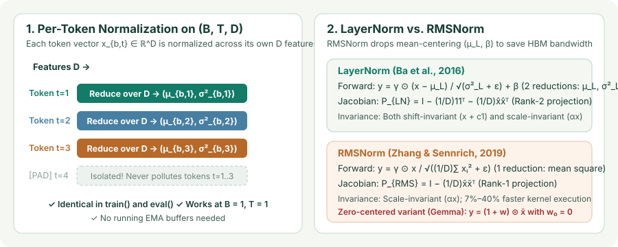

LayerNorm and RMSNorm: Per-Token Normalization, Mean-Centering Invariance, and Backward Jacobians
See why BatchNorm breaks on variable-length sequences and autoregressive decoding, derive LayerNorm’s per-token standardization and invariance matrix, and prove why RMSNorm drops mean-centering for a $7\%\text{–}40\%$ kernel speedup.
In recurrent networks and Transformers, inputs arrive as 3D sequence tensors $X\in\mathbb R^{B\times T\times D}$ of batch size $B$, sequence length $T$, and hidden dimension $D$. Applying BatchNorm across $(B,T)$ immediately runs into three roadblocks: sequences in the same batch have different true lengths (so `[PAD]` tokens or rare long tails skew batch statistics), recurrent depth varies across time steps, and autoregressive decoding generates one token at a time ($B=1,T=1$). Layer Normalization (Ba, Kiros, & Hinton, 2016) solves all three by transposing the reduction axis from the batch to the hidden dimension $D$.
1. Layer Normalization: per-token standardization over $D$
Given a single token’s hidden vector $x\in\mathbb R^D$ (at batch index $b$ and token position $t$), LayerNorm computes the mean and variance across its $D$ feature coordinates:
where $\gamma,\beta\in\mathbb R^D$ are learnable per-feature gain and bias vectors. Because $\mu_L$ and $\sigma_L^2$ depend only on the current token $x\in\mathbb R^D$:
- Zero train–eval discrepancy: LayerNorm computes the exact same formula during training and inference. There are no running EMA buffers $(\mu_{\text{run}},\sigma_{\text{run}}^2)$ and no dependence on batch size $B$.
- Padding isolation: Masked or padded positions $t' > T_b$ never enter the mean or variance of valid tokens $t \le T_b$.
- Exact spherical geometry: Before the affine map $(\gamma,\beta)$, every token vector $\hat x$ lies on the intersection of the hyperplane $\mathbf{1}^\top\hat x = 0$ and the sphere $\|\hat x\|_2 = \sqrt{D}$ (as $\varepsilon\to 0$).

2. Invariance comparison: BatchNorm vs. LayerNorm vs. RMSNorm
Consider a pre-activation $z = Wx$ where $W\in\mathbb R^{D\times d_{\text{in}}}$. Because BatchNorm normalizes each row $w_i^\top x$ across the batch while LayerNorm and RMSNorm normalize the entire vector $Wx$ across all $D$ rows for a single token, they exhibit distinct invariance profiles (Ba et al., 2016; Zhang & Sennrich, 2019):
| Transformation ($\varepsilon\to 0$) | BatchNorm | LayerNorm | RMSNorm |
|---|---|---|---|
| Global weight rescaling ($W \mapsto \alpha W,\;\alpha>0$) | Invariant | Invariant | Invariant |
| Per-neuron row rescaling ($W \mapsto \operatorname{diag}(\alpha)W$) | Invariant (each channel has its own $\sigma_{B,i}$) | Not invariant (changes relative row scales) | Not invariant |
| Single-token input rescaling ($x \mapsto \alpha x,\;\alpha>0$) | Not invariant (unless entire batch scaled) | Invariant ($\sigma_L$ scales by $\alpha$) | Invariant ($\operatorname{RMS}(x)$ scales by $\alpha$) |
| Constant shift of vector ($z \mapsto z + c\mathbf{1}$) | Invariant if shift applied across batch | Invariant ($\mu_L \mapsto \mu_L + c$) | Not invariant (no mean subtraction) |
3. RMSNorm: why dropping mean-centering works and saves $7\%\text{–}40\%$ wall-clock time
Zhang and Sennrich (2019) asked whether LayerNorm’s shift invariance ($\mu_L$) actually contributes to training stability, or whether scale invariance alone suffices. They proposed Root Mean Square Layer Normalization (RMSNorm), which replaces the centered variance $\sigma_L^2$ with the uncentered second moment (mean square) and drops the bias $\beta$:
Notice that when the activations already have mean near zero ($\mu_L \approx 0$), $\operatorname{RMS}(x) = \sqrt{\sigma_L^2 + \mu_L^2 + \varepsilon} \approx \sqrt{\sigma_L^2 + \varepsilon}$, so RMSNorm and LayerNorm compute nearly identical denominators. Why has RMSNorm replaced LayerNorm in virtually every modern LLM (LLaMA, Mistral, Gemma, Qwen, DeepSeek)?
- Memory-bandwidth bound kernels: On modern GPUs, normalization is memory-bandwidth bound, not FLOP bound. Computing $\mu_L = \frac{1}{D}\sum_i x_i$ and then $\sigma_L^2 = \frac{1}{D}\sum_i (x_i - \mu_L)^2$ requires either two passes over $x$ or Welford’s two-state online reduction, plus loading both $\gamma$ and $\beta$. RMSNorm computes a single sum of squares $\sum_{i=1}^D x_i^2$ and loads only $\gamma$, reducing register pressure and HBM traffic for a $7\%\text{–}40\%$ kernel speedup at identical validation perplexity.
- Geometric interpretation: LayerNorm projects $x\in\mathbb R^D$ onto a $(D-2)$-dimensional sphere inside the hyperplane $\mathbf{1}^\top x = 0$; RMSNorm projects $x\in\mathbb R^D$ directly onto the $(D-1)$-dimensional sphere of radius $\sqrt{D}$ in $\mathbb R^D$, preserving the angle between $x$ and the all-ones vector $\mathbf{1}$.
4. Exact backward Jacobians: LayerNorm vs. RMSNorm
Let $g = \nabla_{\hat x}\mathcal L = \gamma\odot\nabla_y\mathcal L\in\mathbb R^D$ denote the upstream gradient scaled by $\gamma$. For LayerNorm, the backward gradient across the $D$ features of a single token has the exact same algebraic form as BatchNorm, with $m$ replaced by $D$:
Now let us derive the RMSNorm backward gradient from scratch. Let $r = \operatorname{RMS}(x) = \left(\frac{1}{D}\sum_{k=1}^D x_k^2 + \varepsilon\right)^{1/2}$, so $\bar x_j = x_j / r$. Differentiating $r$ with respect to $x_i$ gives
By the quotient rule on $\bar x_j = x_j / r$:
Multiplying by $g_j = \gamma_j\frac{\partial\mathcal L}{\partial y_j}$ and summing over $j=1,\dots,D$ yields the clean rank-$1$ projection formula for RMSNorm:
Compare the two Jacobians: LayerNorm subtracts two dot products ($\frac{1}{D}\sum_j g_j$ and $\frac{1}{D}\sum_j g_j\hat x_j$), whereas RMSNorm subtracts only one ($\frac{1}{D}\sum_j g_j\bar x_j$), making the backward pass faster as well!
5. Zero-centered RMSNorm: why `(1 + w)` beats `gamma` under weight decay
Standard RMSNorm initializes $\gamma = \mathbf{1}$. If a training script accidentally applies weight decay $\lambda\|\gamma\|_2^2$ to all parameters, weight decay pushes $\gamma\to\mathbf{0}$ (collapsing the layer output toward zero). Models like Gemma avoid this pitfall by parameterizing the affine gain as $\gamma = \mathbf{1} + w$ with $w$ initialized to $\mathbf{0}$:
Under this parameterization, decaying $w\to\mathbf{0}$ gently regularizes the gain toward the identity scale $1 + 0 = 1$ rather than zero, and also keeps fp16/bf16 updates around $0$ where floating-point precision is highest:
import torch
import torch.nn as nn
class ZeroCenteredRMSNorm(nn.Module):
def __init__(self, dim: int, eps: float = 1e-6):
super().__init__()
self.eps = eps
self.weight = nn.Parameter(torch.zeros(dim)) # w_0 = 0 -> effective gain = 1 + w
def forward(self, x: torch.Tensor) -> torch.Tensor:
# Compute RMS in fp32 to prevent squaring overflow/underflow in bf16/fp16
x_fp32 = x.float()
inv_rms = torch.rsqrt(x_fp32.pow(2).mean(dim=-1, keepdim=True) + self.eps)
normed = (x_fp32 * inv_rms).type_as(x)
return normed * (1.0 + self.weight)6. Questions worth answering
Because squaring activations $x_i^2$ doubles their exponent: in `float16` (max value $65{,}504$), any single activation $|x_i| > 256$ overflows $x_i^2$ to `inf`, producing `NaN` gradients; in `bfloat16` (only $7$ mantissa bits), accumulating thousands of squared terms loses precision. Casting to `float32` inside the fused normalization kernel costs zero extra HBM traffic and prevents overflow.
Not completely! In BatchNorm, the denominator $\sqrt{\sigma_{\text{run}}^2 + \varepsilon}$ is a frozen constant at inference time. In LayerNorm and RMSNorm, the denominator $\sigma_L(x)$ or $\operatorname{RMS}(x)$ is a nonlinear function of the runtime token $x$, so the division by $\operatorname{RMS}(x)$ must still be computed dynamically per token (though the affine gain $\gamma$ can be folded into the following linear layer $W_{\text{next}}\operatorname{diag}(\gamma)$).
Sources
Ba, Kiros, and Hinton, Layer Normalization (2016); Zhang and Sennrich, Root Mean Square Layer Normalization (NeurIPS 2019).